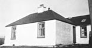
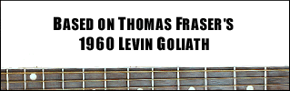

|  | |||
Quote of the Day |
|||
MAVERICK MAGAZINE; COMMEMORATIVE GUITAR; NEW T-SHIRTS; MEMORIAL FESTIVAL |
 | "It would make a swell movie." - John Lilly |
|
One of the most remarkable stories in recording history... Thomas Fraser of Burra Isle, Shetland, passed away in 1978 aged only 50. Thomas had been a fisherman and crofter - ordinary you might say - yet he left a stunning legacy: 1000s of songs recorded at home in his small croft house using a reel-to-reel recorder. Not music traditionally associated with Shetland entirely, for Thomas was an exponent of the country and blues styles and his passion was the guitar. For the past 25 years the reel-to-reels have lain undisturbed. Nearing his death, Thomas quietly observed that maybe someday, his music may see the light of day. The release of 'Long Gone Lonesome Blues' gave Thomas Fraser the recognition he so richly deserved. The critics have called it "one of the most remarkable stories in recording history" and "some of the greatest American music you will hear". What is startling about the collection is it's authenticity and the sheer passion poured into each track. Yet, there is much more to the CD. Here is a release with a story to tell - an amazing story of undiscovered talent and long-lost music unearthed in the attics of a remote Shetland Island community. In 2003, the 2nd Thomas Fraser disc, 'You and My Old Guitar' was released and cemented Thomas's name as a true country music legend. Amazingly, the Thomas Fraser legacy is one that is still being mined. 'Treasure Untold', released in 2005, featured a further 25 stunning tracks, many of which have only recently been discovered. The amazing story continues with the release by Moon Guitars of the Thomas Fraser Commemorative Guitar and its launch at the Thomas Fraser Memorial Festival, held in Burra Isle each November...
|
|
||
Last updated: 16 February 2007: all contents © Karl Simpson 2002-2006 |
|||